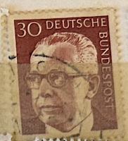
| SOURCE | TITLE| IMAGE MATCH | click to source page |
| eBay | GERMANY 1037 - President Gustav Heinemann "1971 Magenta" (pb46460) | eBay |  |
| eBay | GERMANY WEST DEUTSCHE BUNDESPOST 1970 GUSTAV HEINEMANN 40 ORANGE - USED TKS234* | eBay | 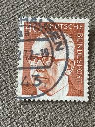 |
| eBay | Politicians Used German & Colonies 1971-1980 Year of Issue Stamps for sale | eBay | 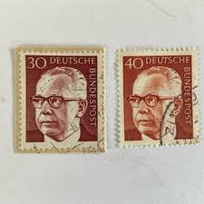 |
| Etsy | 40 Bundespost Deutsche Stamp , Postage Ad2 Black Cancelled Used….. - Etsy |  |
| eBay UK | Berlin 1972 MNH Mi 431 Sc 9N299 President Gustav Heinemann ** | eBay UK | 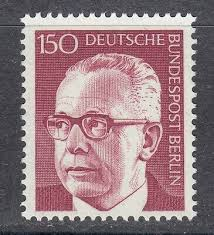 |
| Poppe Stamps | Poppe Stamps: German Federal Republic, 1970, 1551, Presidents - stamps for sale by theme and country | 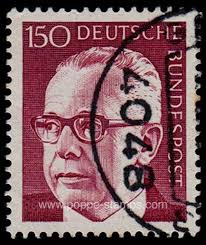 |
| eBay | BERLIN 9N286A - President Gustav Heinemann "1972 Olive" (pc17762) | eBay | 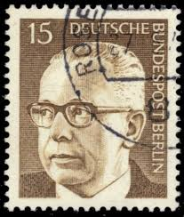 |
| Dreamstime.com | Walter Heinemann Stock Photos - Free & Royalty-Free Stock Photos from Dreamstime | 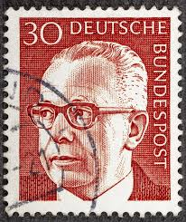 |
| Old-Stamps.com | Gustav Heinemann / Deutsche Bundespost 1970 | 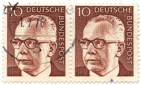 |
| Dreamstime.com | Gustav Heinemann, President of the Federal Republic of Germany West Germany from 1969 To 1974 Editorial Stock Photo - Image of history, national: 223540028 | 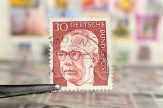 |
| Alamy | Gustav heinemann president west germany hi-res stock photography and images - Alamy | 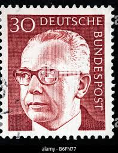 |
| Alamy | Postage stamp from the Federal Republic of Germany in the Federal President Dr. Gustav Heinemann series issued in 1971 Stock Photo - Alamy | 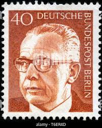 |
| Shutterstock | 133+ Thousand Used Postage Royalty-Free Images, Stock Photos & Pictures | Shutterstock | 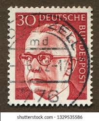 |
| Alamy | Postage stamp: Germany, 1970, Federal president Dr. Gustav Heinemann, 30 Pfennig, mint condition Stock Photo - Alamy |  |
| Amazon.com | Amazon.com: Berlin (West) 427-433 (Complete.Issue) 1972 Gustav Heinemann (Stamps for Collectors) : Toys & Games | 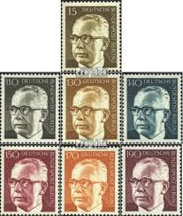 |
| Shutterstock | 5+ Hundred Heinemann Royalty-Free Images, Stock Photos & Pictures | Shutterstock |  |
| Alamy | Photo of a German postage stamp with an illustration of Federal President Dr Gustav Heinemann 1970 Stock Photo - Alamy | 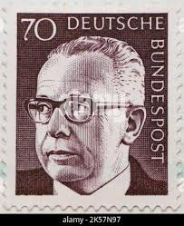 |
| Shutterstock | 100+ Thousand Order Merit Federal Republic Germany Royalty-Free Images, Stock Photos & Pictures | Shutterstock |  |
| Alamy | Gustav Heinemann Portrait German President Federal Republic Democracy Leadership Statesman! This distinguished German definitive stamp issued around 1 Stock Photo - Alamy |  |
| Shutterstock | Circa Germany West: Over 1,138 Royalty-Free Licensable Stock Photos | Shutterstock |  |
| Alamy | Postman germany hi-res stock photography and images - Alamy | 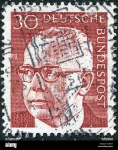 |
| The Philately | Germany 1971-1972 Mi 689-692 Federal President Dr. Gustav Heinemann Sc 1030A, 1034, 1039, 1042 for sale at The Philately |  |
| Pngtree | A Stamp Depicting Gustav He On Germanycirca 1970 Photo Background And Picture For Free Download - Pngtree | 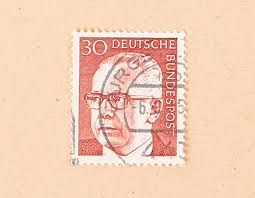 |
| MA-Shops | 6 Werte 1972 BRD, Mi-Nr. 727-32, postfrisch Gustav Heinemann | MA-Shops | 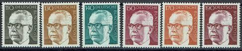 |
| eBay.de | Deutschland 1971 postfrisch Mi 689-692 Präsident Gustav Heinemann.Justizminis... | eBay.de |  |
| Amazon UK | Prophila Collection FRD (FR.Germany) 727-732 (complete.issue) unmounted mint/never hinged ** MNH 1973 Gustav Heinemann (Stamps for collectors) : Amazon.co.uk: Toys & Games | 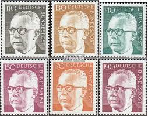 |
| Amazon.nl | BRD (BR.Duitsland) Mi.-Aantal.: 689-692 (compleet.Kwestie) 1971 Gustav Heinemann (Postzegels voor verzamelaars) : Amazon.nl: Speelgoed & spellen | 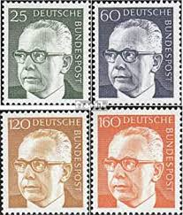 |
| eBay | Ansichtskarte 5949 Fredeburg gelaufen nach Bielefeld ST 22.3.1974 Mi 638. (5656) | eBay | 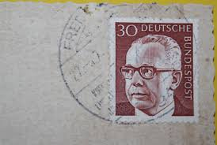 |
| eBay | Berlin 1970 MNH Mi 361 Sc 9N286 President Gustav Heinemann ** | eBay | 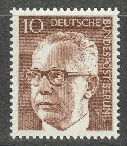 |
| eBay | Germany 1972 150pf PRESIDENT GUSTAV HEINEMANN MNH SC 1041 | eBay | 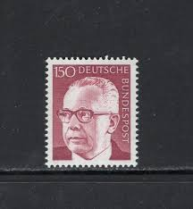 |
| eBay | Germany 1970 10pf PRESIDENT GUSTAV HEINEMANN SC 1029 MNH | eBay | 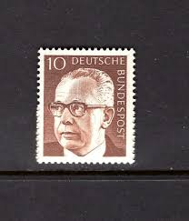 |
| eBay | 1972, Berlin, 431 FN, ** - 1771679 | eBay | 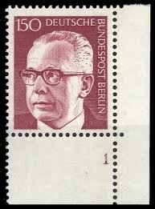 |
| eBay | Germany 1971 30pf PRESIDENT GUSTAV HEINEMANN MNH SC 1031 | eBay | 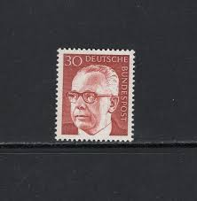 |
| eBay | Bund/BRD Mi Nr.730,732 gestempelt Gustav Heinemann 1972 | eBay | 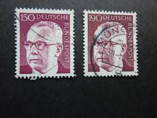 |
| eBay | WEST GERMANY SC #1043 1973 190 PF HEUSS DEFINITIVE POSTALLY USED SINGLE STAMP | eBay | 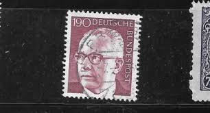 |
| eBay | Federal 1970 Heinemann 638 Block of 4 Corner 1 MNH | eBay | 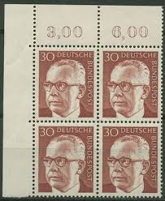 |
| eBay | GERMANY BERLIN SC# 9N297 1970 PRESIDENT MNH 120PF OLD VINTAGE VERY FINE STAMP | eBay | 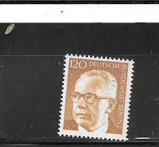 |
| eBay | Germany Scott #9N289 Margin Block of 4 Used Berlin | eBay | 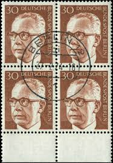 |
| eBay | BERLIN 9N285 - President Gustav Heinemann "1971 Olive Bister" (pc17972) | eBay | 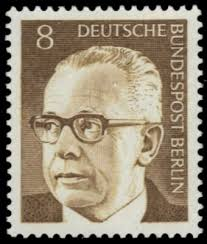 |
| eBay | Germany Berlin 1970 year mint stamps MNH(**) Michel# 359-370 | eBay | 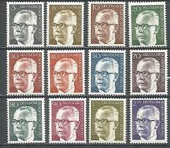 |
| eBay | GERMANY BERLIN SC# 9N299 1970 PRESIDENT MNH 150PF OLD VINTAGE VERY FINE STAMP | eBay | 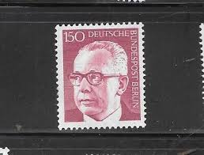 |
| eBay | GERMANY WEST DEUTSCHE BUNDESPOST 1970 GUSTAV HEINEMANN 50 BLUE - USED TKS267* | eBay | 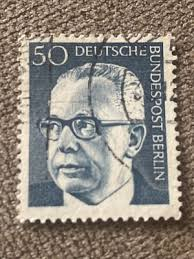 |
| eBay | Germany Scott #9N297 & 9N300, Singles 1973 FVF MNH | eBay | 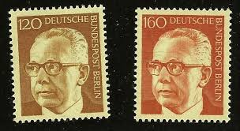 |
| eBay | Germany Berlin 1972 year mint stamps MNH(**) Michel# 427-433 | eBay | 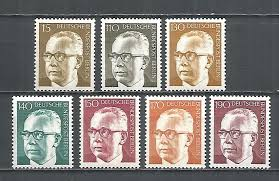 |
| eBay | Bundesrepublik MNH ** 689-92 regulars from Heinemann set | eBay | 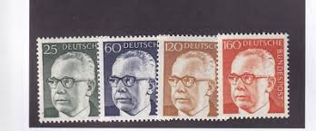 |
| eBay | GERMANY WEST DEUTSCHE BUNDESPOST 1970 GUSTAV HEINEMANN 5 German USED TKS226* | eBay |  |
| eBay | Germany, Postage Stamp, #1042A Mint NH, 1970 Heinemann (AB) | eBay | 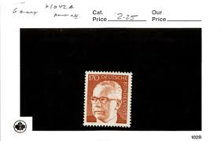 |
| eBay | Germany 1972 160pf PRESIDENT GUSTAV HEINEMANN MNH SC 1042 | eBay | 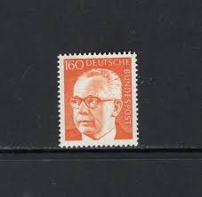 |
| eBay | GERMANY BRD HEINEMANN 1971 MI # 689 - 692 MINT/ MNH | eBay | 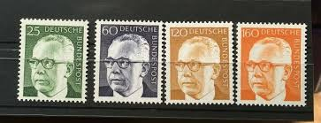 |
| eBay | Germany - Berlin, Postage Stamp, #9N298 Mint No Gum (2 Ea), 1970 Heinemann (AC) | eBay | 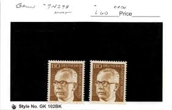 |
| eBay | BERLIN 9N284 - President Gustav Heinemann "1971 Dark Grey" (pc17765) | eBay | 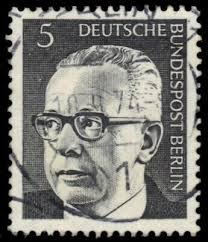 |
| eBay | GERMANY 1971 Lot of 5 MNH OG Sc#1032-1036 PRESIDENT GUSTAV HEINEMANN | eBay | 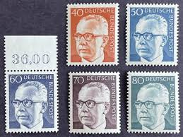 |
| eBay | BERLIN 9N301 - President Gustav Heinemann "1971 Deep Violet" (pc17955) | eBay | 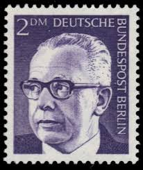 |
| eBay | GERMANY BERLIN SC# 9N300 1970 PRESIDENT MNH 160PF OLD VINTAGE VERY FINE STAMP | eBay | 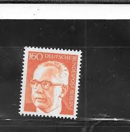 |
| eBay | BUND Nr.643 ** Eckrandpaar FORMNUMMER "1" !!! (104097) | eBay | 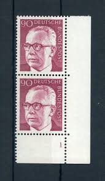 |
| eBay | Germany 1970 20pf PRESIDENT GUSTAV HEINEMANN SC 1030 MNH | eBay | 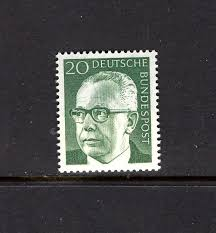 |
| eBay | Germany, Postage Stamp, #1032, 1038 Mint NH, 1970 Heinemann (AE) | eBay | 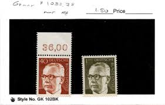 |
| Etsy | Vintage German Handwritten Postcards KASSEL Berlin Hauptbahnhof Stamp Posted - Etsy | 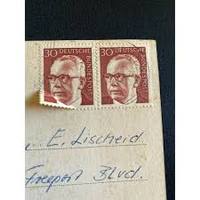 |
| eBay | Germany - Berlin, Postage Stamp, #9N295 Mint LH, 1970 Heinemann (AB) | eBay | 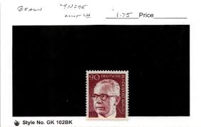 |